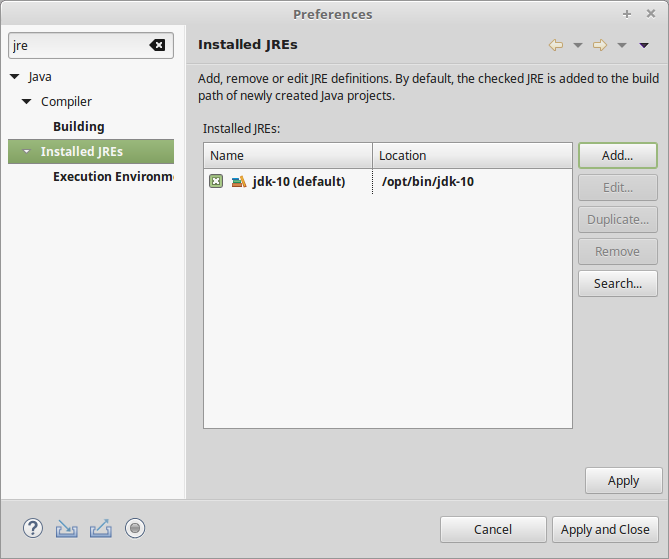
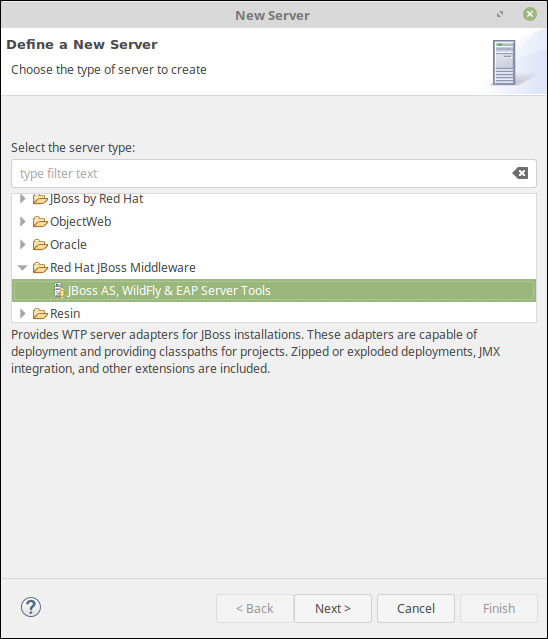
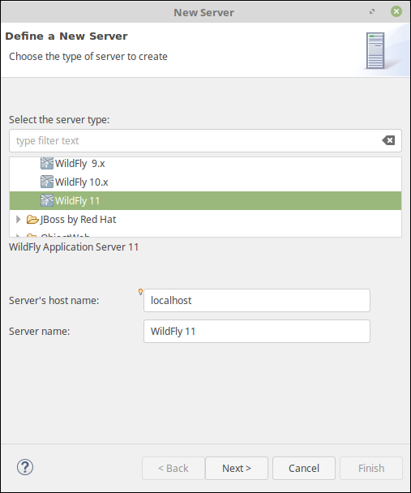
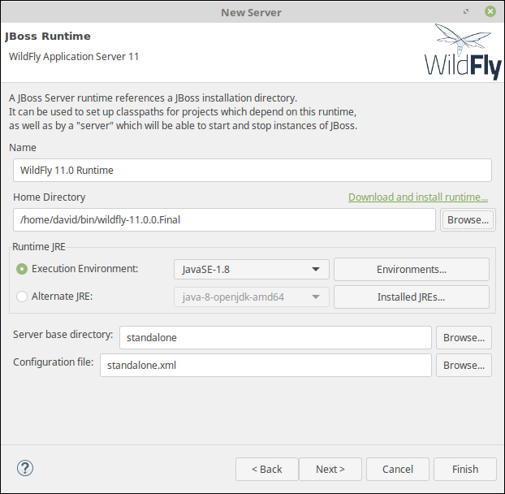
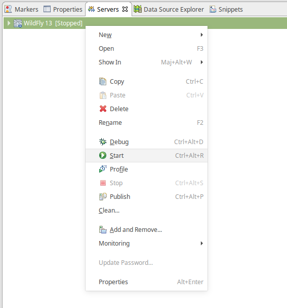
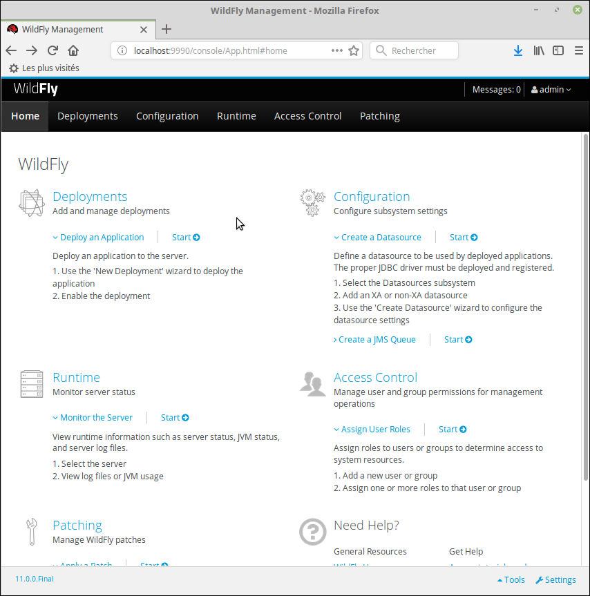

L’environnement de développement¶
L’objectif de cette première partie du cours est la mise en place de l’environnement de développement pour réaliser les développements d’applications Java EE.
Pour cela, vous aurez au moins besoin :
- du kit Java de développement
- d’un environnement de développement : par exemple Eclipse
- d’un serveur d’application Java EE
Téléchargement des outils¶
La liste des outils requis est :
- Java 8 JDK
- Le kit de développement Java 8
JRE ou JDK ?
Il existe deux distributions de Java par Oracle : JRE (Java Runtime Edition) et le JDK (Java development kit). Le JRE permet uniquement l’exécution des programmes Java. Le JDK fournit en plus un compilateur et des outils utiles aux développeurs. Il est donc nécessaire d’installer le JDK pour développer des applications en Java mais également pour exécuter le serveur TomEE.
- Eclipse IDE for Java EE Web Developpers
- L’environnement de développement
Il existe plusieurs distributions d’Eclipse. Il est impératif d’installer la version pour le développement Java EE. Si vous avez déjà installé Eclipse, vérifiez dans le menu « Help > About Eclipse » que votre version est bien « Eclipse Java EE IDE for Web Developers ».
- Wildfly
- Le serveur d’application Java EE Wildfly (anciennement JBoss Application Server)
Nous verrons bientôt que les applications Java EE ne sont pas des programmes indépendants (standalone). Les applications Java EE sont déployées et exécutées dans ce que l’on appelle un serveur d’application qui fournit l’environnement d’exécution nécessaire.
Installation des outils¶
L’installation du JDK dépend de votre plate-forme : il est distribué sous la forme d’un installeur pour Windows et MacOS, et sous la forme d’un package ou d’une archive sous Linux.
Eclipse et Wildfly sont distribués sous la forme d’une archive (tar.gz pour Linux et MacOS et zip pour Windows) que vous pouvez décompresser où vous le souhaitez.
Configuration de Java dans Eclipse¶
Après avoir lancé Eclipse, il va falloir vérifier la version de Java utilisée par l’IDE et la modifier si nécessaire.
Pour vérifier les versions de Java disponibles dans Eclipse, ouvrez les préférences utilisateur : menu Window > Preferences. Dans la zone de filtre en haut à gauche, saisissez jre (pour Java Runtime Environment) et sélectionnez dans l’arbre Installed JREs comme ci-dessous :

Vérifiez que le JDK que vous avez installé se trouve bien dans la liste des JRE détectés par Eclipse. De plus le JDK doit être coché pour indiquer à Eclipse qu’il s’agit de l’environnement d’exécution à utiliser par défaut pour tous les projets.
Si vous ne trouvez pas le JDK installé dans la liste, utilisez le bouton Add… pour l’ajouter manuellement :
- Pour le choix du type de JRE, choisissez Standard VM et cliquez sur Next
- Dans la boîte de dialogue Add JRE, cliquez sur le bouton Directory… pour sélectionner le répertoire d’installation du JDK
- Eclipse s’occupe ensuite de remplir les champs nécessaires et vous n’avez plus qu’à cliquer sur Finish

N’oubliez pas de cocher la ligne de votre JDK dans l’écran Installed JREs pour qu’il devienne l’environnement d’exécution par défaut.
Intégration de Wildfly dans Eclipse¶
Wildfly est un serveur complet qui peut être exécuté de manière autonome (comme un serveur de production par exemple). Cependant, pour simplifier les tâches de développement, nous allons l’intégrer dans Eclipse afin de pouvoir le démarrer et l’arrêter directement depuis l’IDE.
Dans Eclipse Java EE, il existe une vue pour créer et gérer les serveurs. Pour ajouter cette vue, il faut passer par le menu Window > Show View > Servers.
Vous avez maintenant la vue « Servers » ajoutée à votre perspective de développement. Faites un click droit dans cette vue pour sélectionner New > Server.
Lors de la première utilisation, il va falloir installer les outils JBoss. Pour cela, dans la boîte de dialogue Define a New Server, sélectionnez Red Hat JBoss Middleware > JBoss AS, Wildfly & EAP Server Tools. comme type de serveur.

Cliquez ensuite sur Next et patientez le temps pour Eclipse de télécharger les dépendances nécessaires. Il vous faudra également valider la license Red Hat. Attention il faut attendre un peu avant que l’installation soit effective et il vous faudra redémarrer Eclipse.
Vous pouvez maintenant créer un serveur Wildfly en sélectionnant JBoss Community > Wildfly 11.

Cliquez ensuite sur Next. Dans la boîte de dialogue Create a new Server Adapter, laissez les valeurs par défaut et cliquez sur Next. Dans la boîte de dialogue JBoss Runtime, il vous faut indiquer l’emplacement du serveur sur votre disque. Pour cela, cliquez sur Browse… pour sélectionner le répertoire d’installation de Wildfly sur votre disque.

Cliquez ensuite sur Finish.
Vous disposez maintenant d’un serveur dans votre vue Servers. Il ne vous reste plus qu’à le démarrer en faisant un click droit sur son nom et en sélectionnant Start.

Si tout se passe bien, à la fin du lancement, vous pourrez accéder à votre serveur à l’adresse http://localhost:8080. Vous devez voir s’afficher la page d’accueil du serveur.
Accès à la console d’administration du serveur¶
Le serveur Wildfly fournit une interface Web de configuration qui peut être utile.
Par défaut, elle est accessible à l’adresse http://localhost:9990. Pour pouvoir
y accéder, il va falloir activer un compte administrateur depuis votre machine.
Pour cela, il faut utiliser les outils en ligne de commande de Wildfly qui
sont disponible dans $WILDFLY_HOME/bin. Sous Windows, lancez le script
add-user.bat et pour les autres systèmes d’exploitation add-user.sh.
Puis répondez aux questions pour créer une utilisation admin :
What type of user do you wish to add?
a) Management User (mgmt-users.properties)
b) Application User (application-users.properties)
(a): a
Enter the details of the new user to add.
Using realm 'ManagementRealm' as discovered from the existing property files.
Username : admin
User 'admin' already exists and is enabled, would you like to...
a) Update the existing user password and roles
b) Disable the existing user
c) Type a new username
(a): a
Password recommendations are listed below. To modify these restrictions edit the add-user.properties configuration file.
- The password should be different from the username
- The password should not be one of the following restricted values {root, admin, administrator}
- The password should contain at least 8 characters, 1 alphabetic character(s), 1 digit(s), 1 non-alphanumeric symbol(s)
Password :
WFLYDM0098: The password should be different from the username
Are you sure you want to use the password entered yes/no? yes
Re-enter Password :
What groups do you want this user to belong to? (Please enter a comma separated list, or leave blank for none)[ ]:
Updated user 'admin' to file '/home/david/bin/wildfly-11.0.0.Final/standalone/configuration/mgmt-users.properties'
Updated user 'admin' to file '/home/david/bin/wildfly-11.0.0.Final/domain/configuration/mgmt-users.properties'
Updated user 'admin' with groups to file '/home/david/bin/wildfly-11.0.0.Final/standalone/configuration/mgmt-groups.properties'
Updated user 'admin' with groups to file '/home/david/bin/wildfly-11.0.0.Final/domain/configuration/mgmt-groups.properties'
Is this new user going to be used for one AS process to connect to another AS process?
e.g. for a slave host controller connecting to the master or for a Remoting connection for server to server EJB calls.
yes/no? yes
Une fois le compte administrateur activé, rendez-vous à l’adresse http://localhost:9990 et saisissez le login / mot de passe pour accéder à la console d’administration.
